Dải đất miền Trung nóng gió khắc nghiệt, cuộc sống khó khăn và nghèo nàn nên ẩm thực miền Trung vì thế cũng rất bình dị, dân dã nhưng lại mang hương vị rất riêng không lẫn vào đâu được. Trong ẩm thực miền Trung, các món ăn có vị đậm hơn, cay hơn và mặn hơn các món ăn của miền Bắc và miền Nam.
Trải qua thăng trầm của thời gian, ẩm thực miền Trung đã vượt ra khỏi biên giới của một mảnh đất cằn cỗi, trở thành một nét văn hóa đặc trưng thú vị và hấp dẫn khiến du khách luôn mong muốn được tận mắt khám phá.
Có thể nói, khi nhắc đến miền Trung, du khách thập phương không khỏi ngỡ ngàng về một nền ẩm thực đa dạng với vô vàn món ăn ngon, đặc sắc cả về hương vị lẫn cách bài trí, chế biến. Nhiều thập kỷ qua, các món ăn như mì Quảng, bún bò Huế, Cao lầu Hội An, bánh tráng cuốn thịt … không chỉ góp phần làm nên sự phong phú cho bản đồ món ngon Việt Nam mà còn trở thành một sứ giả văn hóa du lịch, mang Việt Nam đến gần hơn với nền ẩm thực đồ sộ của thế giới.
1. Bún bò Huế
Nếu Hà Nội nổi tiếng với bát bún thang nóng hổi, ấm lòng thì miền đất Huế mộng mơ lại lừng danh với bát bún bò độc đáo, lạ miệng. Một tô bún bò Huế là sự kết hợp hài hòa của nước dùng thanh ngọt, cùng đầy đủ các loại rau, củ đầy dinh dưỡng. Bún bò Huế có hương vị rất riêng, không thể “lẫn” với những loại bún khác bởi vị ngon đặc trưng của mắm ruốc, hương sả, khhi thưởng thức sẽ có vị ngọt dịu dàng, mùi thơm dễ chịu chứ không nồng, không tanh. Cái vị đậm đà, quyến rũ ấy khiến bún bò Huế trở thành món ăn đặc sản miền Trung không thể bỏ qua.
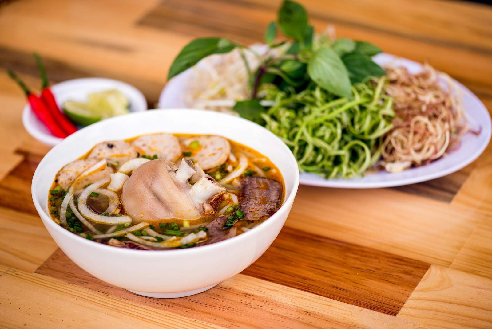
Nếu đặt chân đến miền TRung thì bạn không nên bỏ qua bún bò Huế.2. Mì Quảng
Nói đến những món ăn ngon ở miền Trung nắng gió, không thể thiếu món mì Quảng đặc sản của vùng đất Quảng Nam thương nhớ. Mì Quảng được chế biến khá tỉ mỉ, cầu kỳ, nêm nếm gia vị sao cho nước lèo phải sánh, ngọt, vừa đủ thấm vào từng sợi mì giòn dai, làm mềm những món rau sống ăn kèm như: xà lách, bắp chuối, diếp cá, húng, rau cải, hành, mùi,…. không thể thiếu một miếng bánh đa vừng giòn giòn, ngầy ngậy. Những nguyên liệu đó như hòa quyện với nhau, hài hòa làm tăng thêm hương vị, tôn lên nét đặc trưng của một tô mì Quảng trứ danh.
Nhắc đến Quảng Nam không thể không nhắc đến món mì Quảng.3. Cơm hến
Tô cơm hến thơm nồng, nóng hổi, vừa có vị ngòn ngọt, bùi bùi của hến cùng phần nước luộc tinh chất không tanh. Có thể nói cơm hến là món ăn cay nhất trong ẩm thực Huế, vừa ăn vừa xuýt xoa, ăn đến đâu mồ hôi chảy ra đến đấy, nhưng đối với người Huế, phải như vậy mới đã, mới thấm được hết cái hương vị thơm ngon của món ăn.
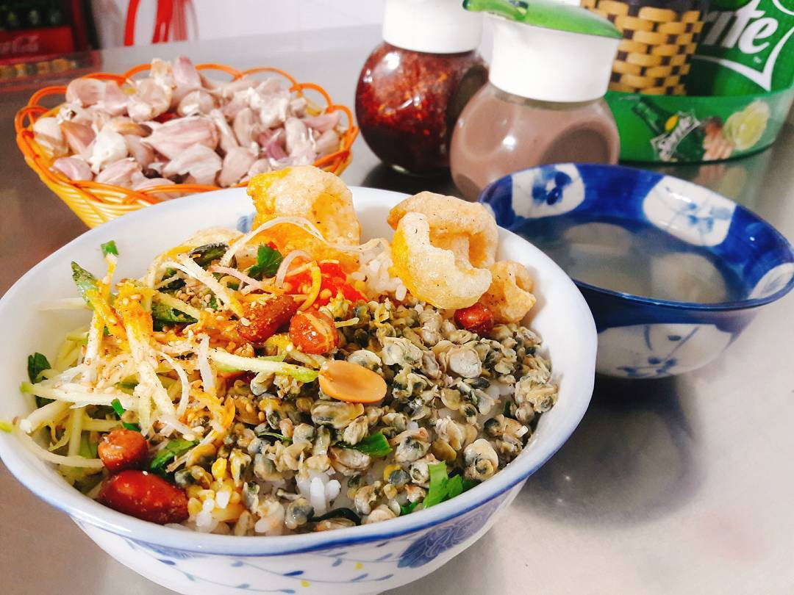
Về làng Vĩ Dạ thử chén cơm Hến thôi nào.4. Cao lầu
Nghe tên thì có vẻ lạ, nhưng cao lầu có hình thức gần giống với mì Quảng là món đặc sản chắc chắn phải thử khi du lịch tại Hội An đó. Một bát cao lầu đầy đủ gồm có sợi mì tươi, một ít sợi mì khô chiên giòn, thịt lợn thái lát và ít nước dùng. Nước dùng của cao lầu chính là nước tiết ra từ thịt lợn tẩm ướp gia vị, đun trên bếp, nước dùng có vị hơi ngọt, đậm đà và thơm ngon. Không như những món ăn của miền Trung khi ăn kèm với rất nhiều loại rau, đĩa rau sống của cao lầu đơn giản chỉ gồm cải non và rau đắng.
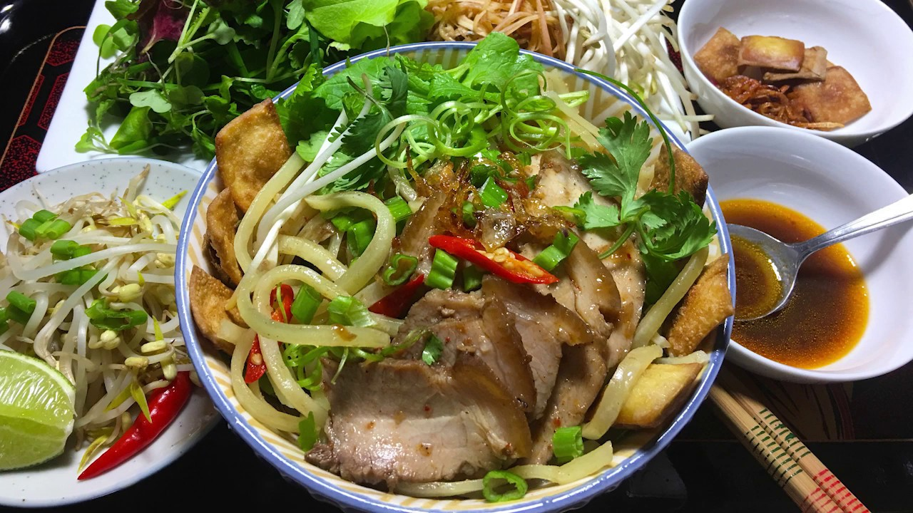
Cao lầu đúng chuẩn hương vị Cố thành.5. Cơm gà Tam Kỳ
Mảnh đất Tam Kỳ (Quảng Nam) nổi tiếng từ rất lâu với món cơm gà lạ miệng. Gạo và nếp được trộn lẫn chung với nhau để nấu cơm là điểm đặc trưng của món ăn này. Gà không được thái thành từng lát mà được xé nhỏ, bóp với hành tây, rau răm, rau thơm, ngò cùng ít gia vị cho đậm đà, ngon mà không ngấy.
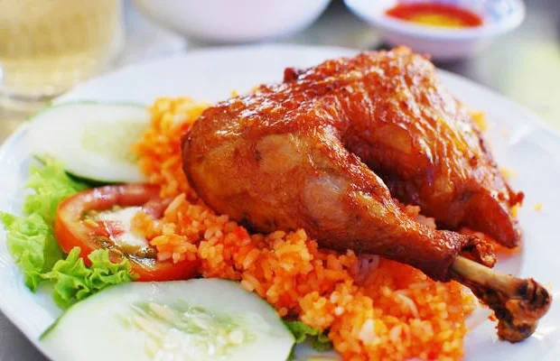
Hãy đến với Hội An Đà Nẵng để có thể thưởng thức món cơm gà Tam Kỳ đúng chuẩn tại đây/figcaption>
6. Don Quảng Ngãi
Nghe tên có vẻ đặc biệt nhưng món ăn này lại rất đơn giản, chỉ gồm một tô nước có một ít don, hành tây và bánh tráng gạo nướng giòn cùng những trái ớt xiêm xanh cay xé lưỡi. Khi ăn bạn phải vừa ăn, vừa húp nước mới có thể cảm nhận hết được cái ngon, cái giòn mềm của bánh tráng nướng cùng cái vị cay xè của ớt xiêm tạo nên một món ăn lạ miệng.
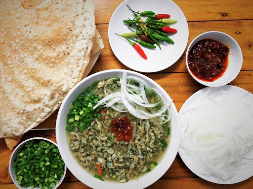
Độc đáo món ngon don Quảng Ngãi.7. Bánh đập
Khánh Hòa, Bình Định, Quảng Ngãi, Đà Nẵng... là những địa phương gắn liền với món ăn này. Bánh đập là sự kết hợp giữa bánh tráng nướng, bánh ướt, ăn kèm với thịt nướng hoặc có thể ăn với thịt luộc, lòng lợn... cùng chén mắm nêm với vị cay đặc trưng của người dân miền biển. Cái giòn rụm của bánh tráng, cái mềm dẻo của bánh ướt hòa quyện vào nhau trong cái đậm đà của mắm nêm, miếng thịt nướng chín vàng, thơm phức đem lại cảm giác ngon miệng thích thú.
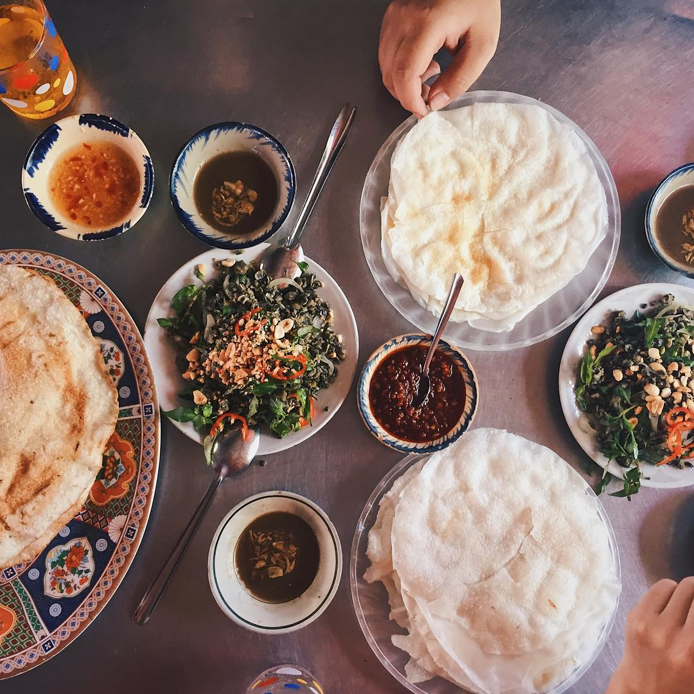
Bánh đập ăn là ghiền - đậm đà hương vị phố Cổ
BỮA CƠM NHÀ
Không phong phú bằng lối ẩm thực Bắc hay phồn vinh và sôi nổi như ẩm thực miền Nam, Ẩm thực miền Trung khoác lên mình nét thanh tao, sang trọng nhưng vẫn thoảng chút mộc mạc gần gũi. Để nói về ẩm thực miền Trung, chúng ta có thể phân biệt thành hai loại hình ẩm thực chính. Bên cạnh lối ẩm thực cầu kỳ mang tính chất Cung đình, nặng về lễ nghi truyền thống thì còn có lối ẩm thực rất dung dị và mộc mạc. Cũng chính vì sự khác biệt đó mà ẩm thực miền Trung mang chiều sâu của một nền văn hóa lâu đời, phản ánh cuộc sống, cách ứng xử và giao tiếp của cộng đồng. Đồng thời tạo nên sức hút mãnh liệt với cả du khách thập phương lẫn những Chuyên gia ẩm thực, Đầu bếp chuyên nghiệp khao khát khám phá.
Thực đơn ngày 1:
1. Cá trê kho gừng nghệ
2. Salad chua ngọt
3. Sườn già hầm với su hào
4. Tráng miệng: táo
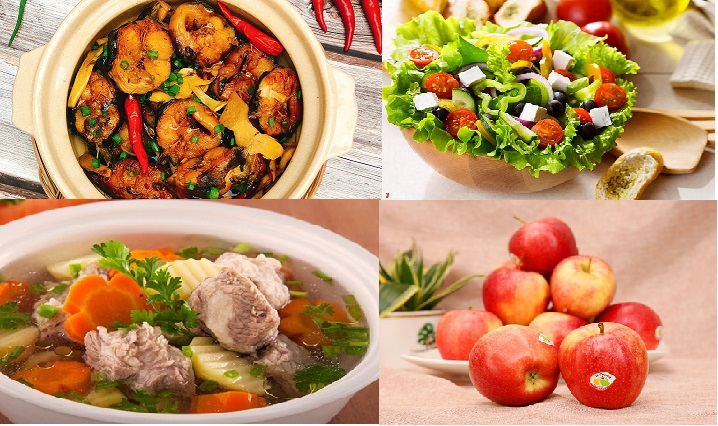
Thực đơn ngày 1
Thực đơn ngày 2:
1. Thịt kho trứng
2. Đậu cove xào lòng gà
3. Nghêu nấu rau muống
4. Tráng miệng: nho
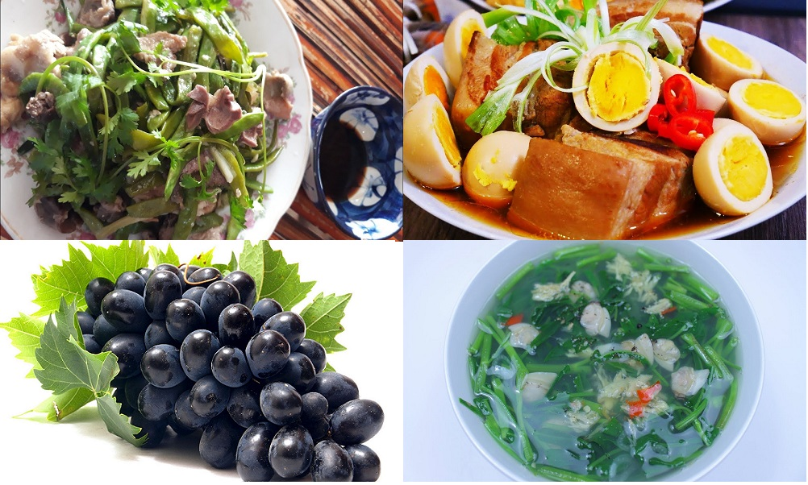
Thực đơn ngày 2
Thực đơn ngày 3:
1. Cá mú xào hành gừng
2. Măng kho tôm thịt
3. Canh gà nấu rau củ
4. Tráng miệng: dưa hấu
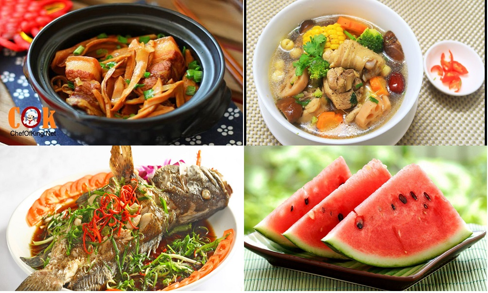
Thực đơn ngày 3
Thực đơn ngày 4:
1. Ba chỉ chiên sả ớt
2. Xà lách trộn trứng
3. Nghêu nấu mồng tơi
4. Tráng miệng: mít
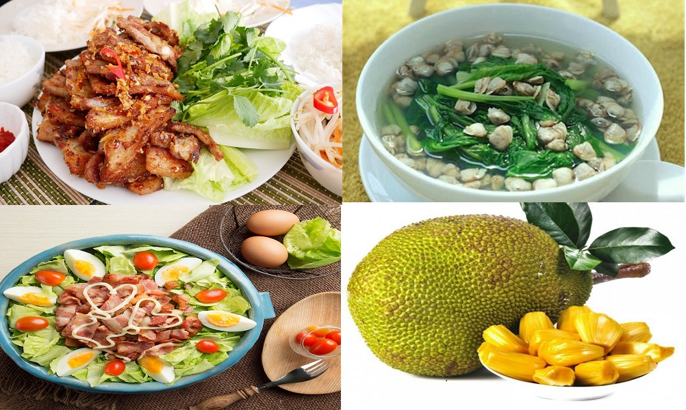
Thực đơn ngày 4
Thực đơn ngày 5:
1. Ba rọi sốt tỏi cay
2. Cà tím xào tỏi
3. Tôm nấu cải ngọt
4. Tráng miệng: bưởi
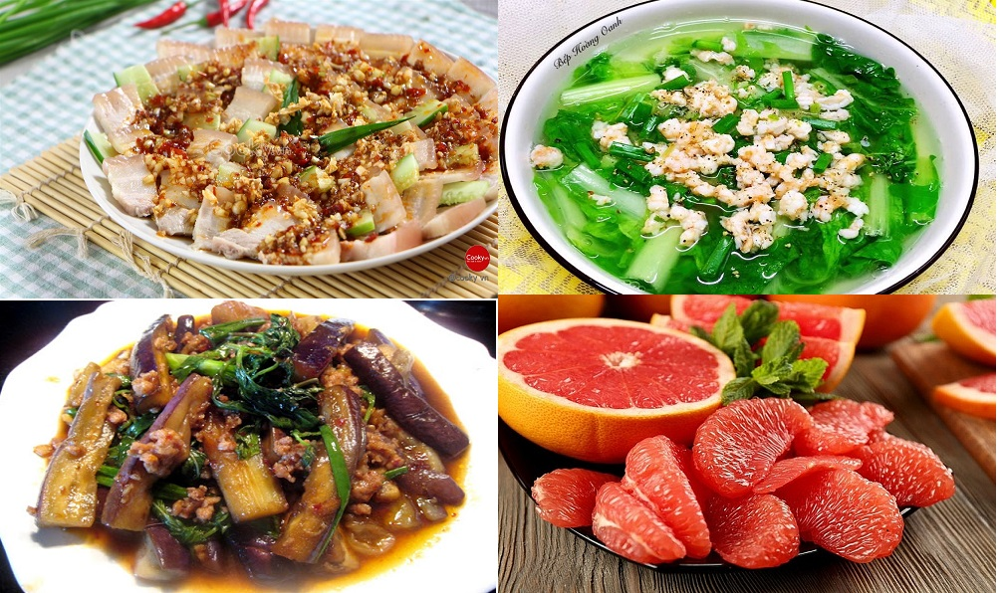
Thực đơn ngày 5
Thực đơn ngày 6:
1. Giò heo hon
2. Cải bó xôi sốt bơ tỏi
3. Canh rau má thịt bò
4. Tráng miệng: thanh long
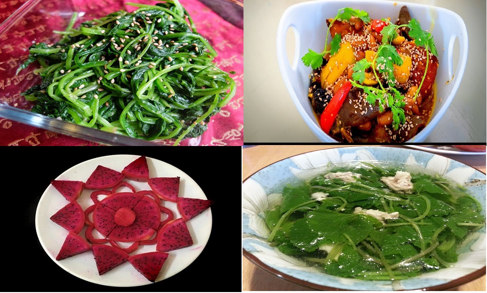
Thực đơn ngày 6
Thực đơn ngày 7:
1. Đậu bắp nhồi thịt
2. Salad cần tây
3. Canh xương hầm cần tây
4. Tráng miệng: xoài
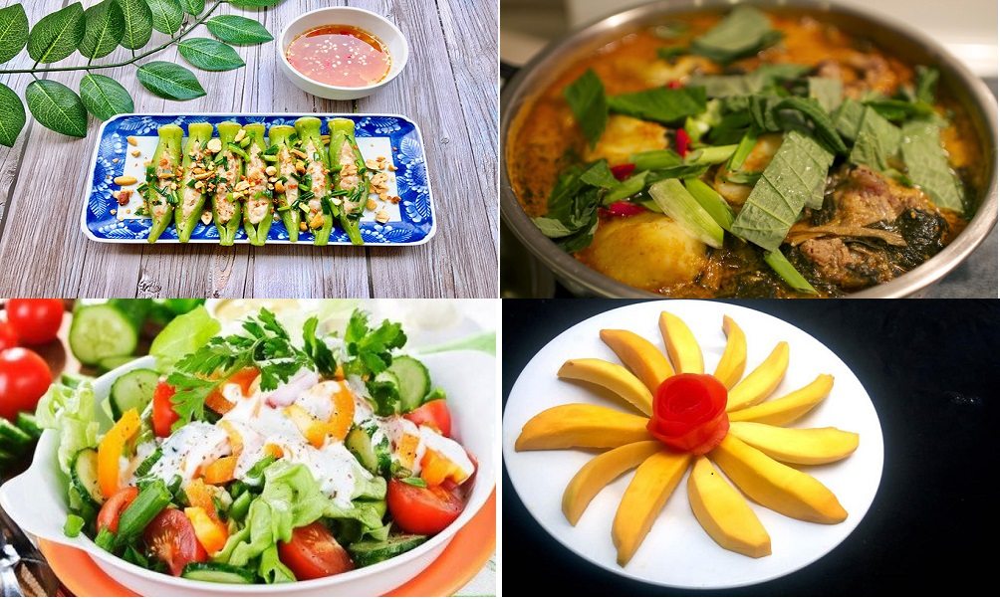
Thực đơn ngày 7
Trong kho tàng ẩm thực miền Trung, đặc sản miền Trung nhiều vô kể. Với lối ẩm thực riêng mang sắc thái đặc trưng của mỗi vùng miền, ẩm thực miền Trung có sự hòa trộn giữa cái chung và cái riêng, là yếu tố làm cho ẩm thực miền Trung rất phong phú và đa dạng.
Món ăn là sự kết hợp hài hòa của các thành phần nguyên liệu bao gồm các yếu tố tự nhiên : Kim, Mộc, Thủy, Hỏa, Thổ mang lại sức khỏe và năng lượng cần thiết cho con người. Sự tinh tế của món ăn còn thể hiện qua cách trình bày khi tất cả các nguyên liệu được sắp xếp trên những bẹ bắp chuối quay tròn quanh mẹt cá mai tươi và nồi lẩu nghi ngút khói, rực rỡ như 1 bông hoa khoe sắc trên bàn tiệc.
CỖ TẾT
Những món ăn ngày Tết miền Trung chẳng thua kém gì 2 miền Bắc Nam, dẫu quanh năm khó khăn, người dân nơi đây vẫn mong muốn có một cái Tết sung túc để cầu cho một năm “mưa thuận gió hòa”.
1. Bánh thuẩn
Lạ lắm, cứ những ngày cận kề như thế này ở miền Trung, người người, nhà nhà lại làm bánh thuẩn, đến nỗi cái hương thơm ấy len lỏi khắp nơi để báo rằng một mùa Tết nữa đang về.
Bánh thuẩn hay có nơi còn gọi là bánh thửng, một trong món ăn không “chơi” không thể thiếu trong ngày Tết miền Trung, chúng cũng được gói ghém cẩn thận và đặt lên bàn thờ tổ tiên những ngày cận kề năm mới.
Bánh thuẩn có vị gần giống bánh gato, thế nhưng chả có bánh gato nào có được cái vị mềm xốp, thơm nức mùi trứng gà như món bánh này.
Chẳng thế mà, dẫu không xa hoa lộng lẫy như các món bánh khác, nhưng cứ đến cận kề Tết, những ngày trời mưa phun người ta lại thèm khát được thưởng thức món bánh bình dị ấy một cách lạ thường.
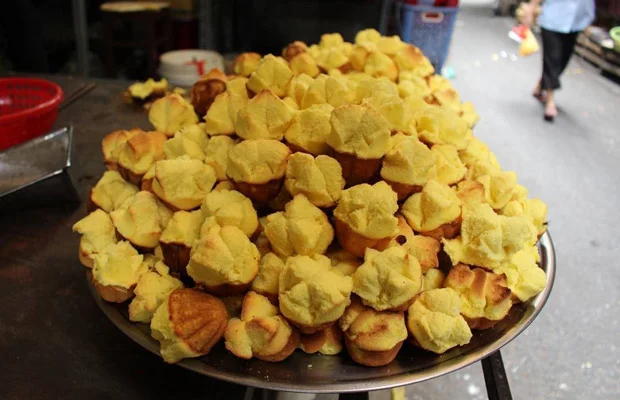
Bánh thuẩn - món ăn đặc trưng ngày Tết miền Trung2. Bánh tét - món ăn không thể thiếu trong mâm cỗ ngày Tết miền Trung
Bánh tét thì miền Nam cũng có, thế nhưng nếu có dịp ghé, bạn sẽ thấy món ăn ngày Tết không thể thiếu này ở miền Trung lại bình dị đến mức khó tưởng.
Không quan trọng nhiều màu sắc, đôi khi cũng chẳng cần có nhân, bánh Tét miền Trung chỉ cần đôi ba lon nếp, một ít lá chuối xanh, ít muối, ít tiêu cũng đủ làm nên hương vị Tết.
Nguyên liệu càng đơn giản, không có nhân thì bánh sẽ càng giữ được lâu. Chẳng thế mà, mỗi gia đình miền Trung chỉ làm dăm ba đòn bánh Tét có nhân, còn lại để không, ra năm chiên giòn rụm ăn kèm vài lát dưa món, chẳng mấy chốc mà hết cả đòn...
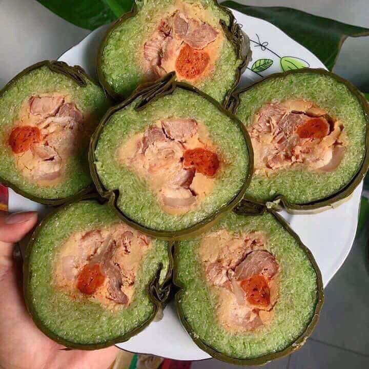
Bánh tét3. Mứt gừng
Nếu miền Bắc nổi tiếng với mứt sen, miền Nam có mứt dừa thì miền Trung sẽ là mứt gừng. Ngẫm lại mới thấy, người ta bảo người miền Trung thích vị cay nồng chẳng sai tí nào.
Dưới cái tiết trời se lạnh, mưa phùn phất phơ của những ngày đầu năm, ngậm một miếng mứt gừng cay cay, nhâm nhi tách trà nóng, chẳng cần gì Tết cũng đủ ấm lòng.
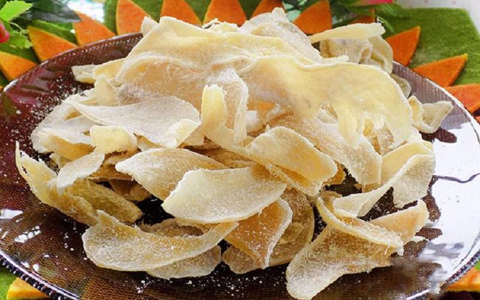
Mứt gừng - món ăn “chơi” thưởng ngoạn ngày Tết của người miền Trung4. Dưa món
Dưa món gần như là món ăn quốc dân trong ngày Tết, thế nhưng phải chăng dưới cái nắng gay gắt của miền Trung mà nguyên liệu làm dưa món giòn dai và cay nồng hơn bất cứ đâu, hay chăng là sự ưu ái riêng cho mảnh đất đầy nắng gió này.
Dưa món được làm từ đu đủ xanh, cà rốt, hành kiệu, ớt, tỏi… ngâm với nước mắm ngon được ăn kèm với bánh tét, nhất là bánh tét chiên giòn rụm.
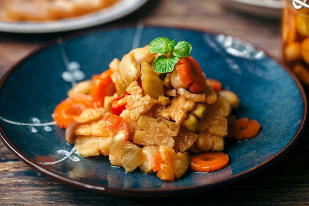
Dưa món - giòn giòn - sần sật5. Thịt ngâm mắm
Có thể là thịt lợn hay thịt bò tùy thích, cách chế biến đơn giản sơ chế xong được ngâm vào nước mắm đường đã được pha nấu theo tỉ lệ nhất định, khi ăn thái lát và ăn cùng dưa món ngon tuyệt cú mèo.
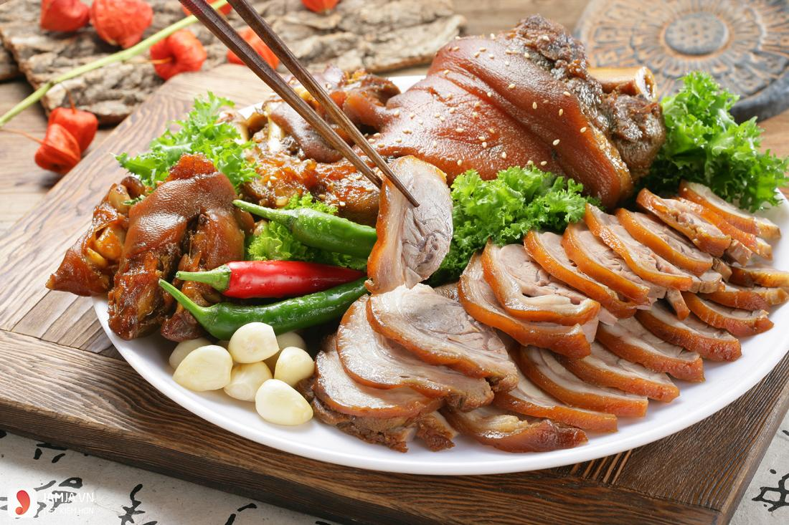
Thịt ngâm mắm6. Nem chua (Thanh Hóa, Bình Định, Khánh Hòa)
Nem chua đi kèm chả lụa, bên mâm cơm ngày tết là những cục nem hồng hào hấp dẫn bọc qua lớp lá ổi được gói bên ngoài bởi lá chuối. Nem miền trung mịn màng, hương vị dịu nhẹ, ăn kèm tép tỏi cho tăng hương vị.
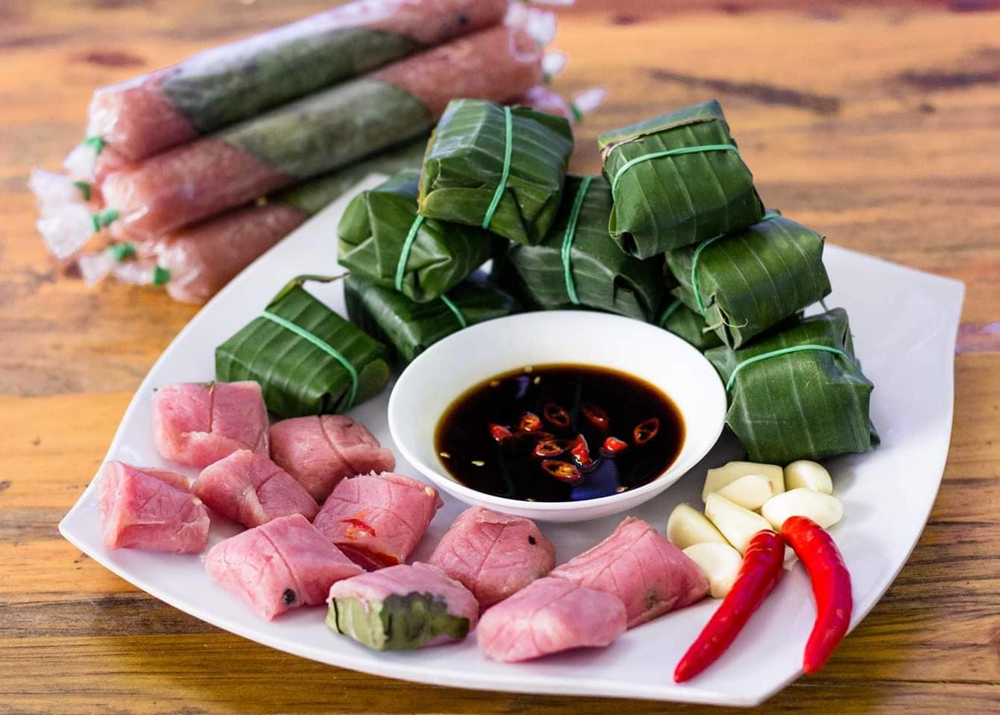
Nem chua
CỖ CƯỚI HỎI
Thực đơn đám cưới miền Trung cũng có rất nhiều nét đặc sắc mang nét văn hóa ẩm thực vùng miền, bạn có thể lựa chọn để làm thực đơn cho ngày vui của mình.
Những món ăn trong tiệc cưới sẽ là yếu tố quan trọng, quyết định ấn tượng của khách mời về đám cưới.
Phong tục cưới hỏi người miền Trung cũng đầy đủ 3 lễ: Lễ dạm ngõ, lễ ăn hỏi và lễ cưới.
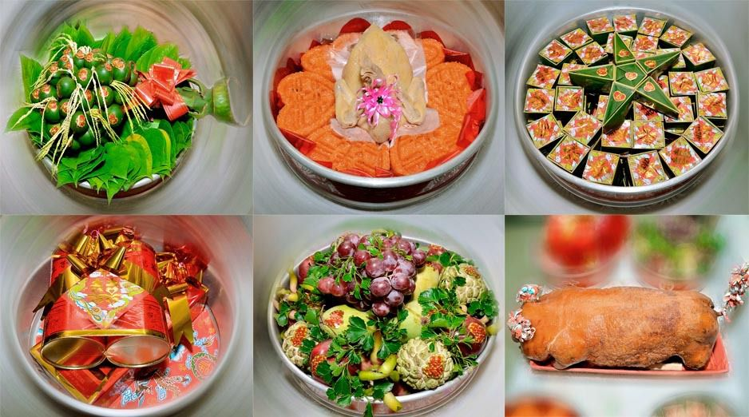
Phong tục cũng như thực đơn ngày cưới của người miền Trung có những nét rất riêng và độc đáo
Thực đơn tiệc cưới miền Trung có rất nhiều món ăn đa dạng về nguyên liệu và cách chế biến, đặc biệt ở Huế thì các món ăn còn phản phất hương vị truyền thống cung đình.
+ Món khai vị có thể là soup măng cua, soup hải sản, gỏi tôm, gỏi ngó sen, mực chiên xù, chả giò hải sản, gà hấp chanh muối … Nếu món khai vị đầu tiên đã là soup thì món tiếp theo sẽ là một món chiên, nướng hoặc món khô nào đó thường là: chả giò tôm cua hoặc ghẹ tẩm bột, gỏi mực, v.v…
+ Món chính trong thực đơn đám cưới miền Trung có thể là: gà quay, heo sữa quay hay cá chẽm Tứ Xuyên, cá lóc hấp, cá tai tượng, lẩu hải sản thái, cơm kim quy, v.v… Trong số các món chính của thực đơn đám cưới miền Trung thường có sự sắp xếp theo thứ tự phục vụ món với hương vị đậm đà dần lên. Đầu tiệc nên chọn những món ăn nhẹ, không gây nhanh no, đến giữa buổi tiệc mới đưa ra các món có hương vị đậm đà như thịt, cá, hải sản, v.v…
+ Món tráng miệng có thể là: trái cây, hoa quả tươi, rau câu, bánh flan, yoghurt, bánh ngọt, v.v…